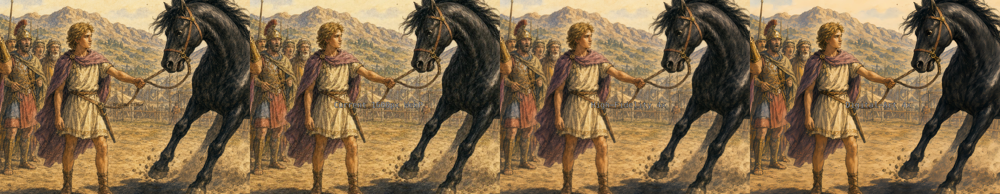
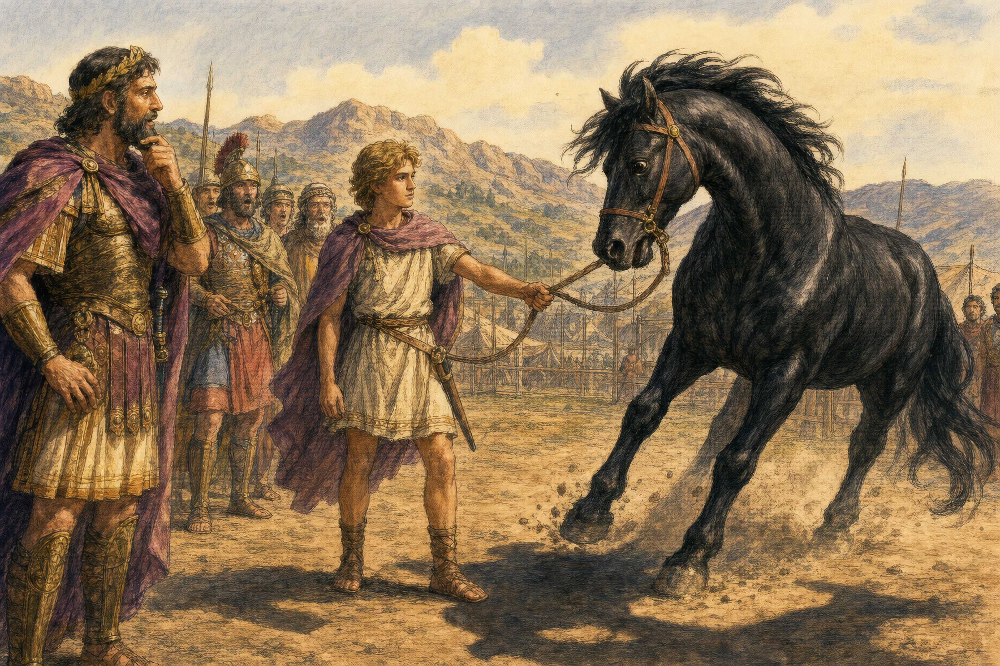
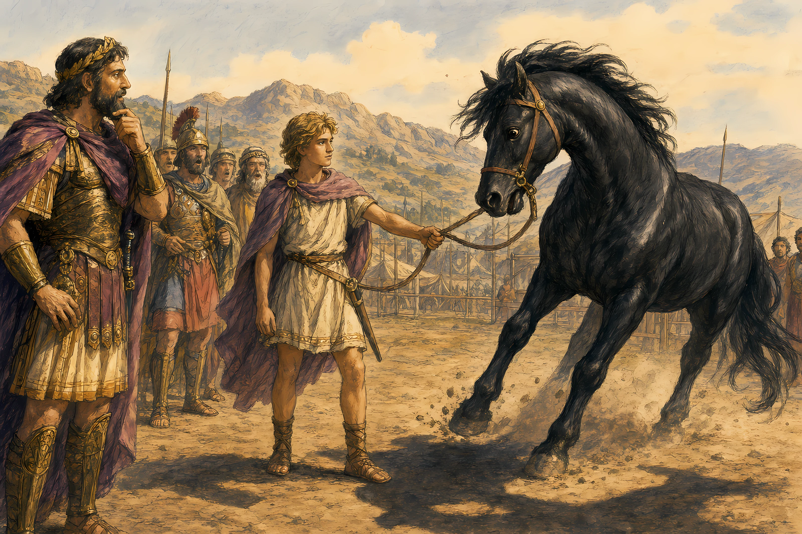

Original source
1536×1024 PNG from generation. Kept in images/story/source/.
Source PNGs are 1536×1024. Current site WebPs are 1600×1067 (~393 KB). Upscayl 4× via your installed app, then resized to 3200px wide for delivery (~2 MB WebP).

1536×1024 PNG from generation. Kept in images/story/source/.

1600×1067, ~393 KB. What the screensaver uses today.

Upscayl high-fidelity-4x model. Best for painted/illustrated scenes. ~2.0 MB WebP.

Upscayl digital-art-4x model. Sharper edges, can look plasticky on soft washes. ~1.5 MB WebP.